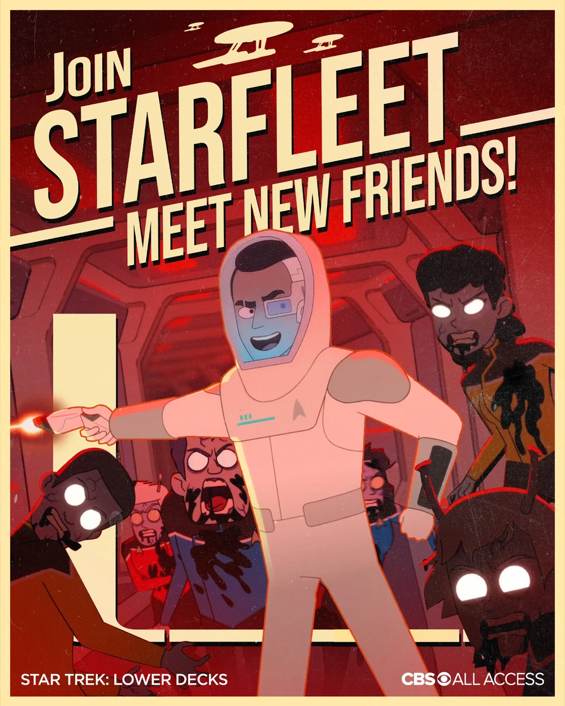

The Lower Decks

Star Trek: Lower Decks is the ninth main series set in the Star Trek universe, the tenth including the companion series Star Trek: Short Treks, and the twelfth Star Trek series overall. It is the second series to be entirely animated, after Star Trek: The Animated Series, with episodes running half an hour, and the third series to have animated episodes, after Short Treks. Lower Decks is the first original animated series commissioned by CBS All Access, as well as the first produced by the new CBS animation arm, CBS Eye Animation Productions, and was announced in October 2018, with All Access committing to a two-season order.
Created by Mike McMahan, the series is an adult animation comedy produced in association with Titmouse, Inc. and forms part of Alex Kurtzman's five-year deal with CBS to expand the Star Trek franchise. Lower Decks focuses on "the support crew serving on one of Starfleet's least important ships."
The show takes place aboard the California-class USS Cerritos on the "lower decks". The show's time period is described as the Star Trek: The Next Generation-era, more specifically 2380, after Star Trek Nemesis.
Star Trek: Lower Decks has been nominated for one Emmy Award, in the category of "Outstanding Sound Editing For A Comedy Or Drama Series (Half-Hour) And Animation".